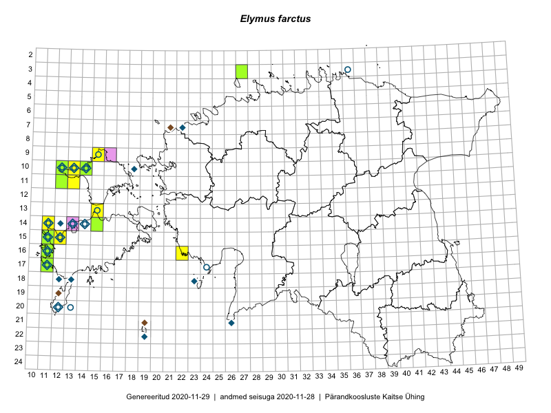

Elymus farctus
Uuendatud: 2016-12-02
Kaardile koondatud taksonid: Elymus farctus (Viv.) Runemark ex Melderis; Elymus farctus subsp. boreali-atlanticus (Simonet & Guin.) Melderis

Kaart põhineb 19 vaatlusel. Taksonit on leitud 10 ruudust.
Viited andmebaasikirjetele
- Toomas Kukk, Eerik Leibak: 2015-08-11: 09-15: ala
- Toomas Kukk, Eerik Leibak: 2015-08-11: 09-15: GPS punkt
- Mari Reitalu, Oliver Parrest: 2015-07-14: 14-11: ala
- Mari Reitalu, Oliver Parrest: 2015-07-14: 15-12: ala
- Mari Reitalu, Triin Reitalu: 2015-08-05: 17-11: ala
- Mari Reitalu, Oliver Parrest: 2015-07-14: 15-12: GPS punkt
- Mari Reitalu, Oliver Parrest: 2015-07-14: 14-11: GPS punkt
- Marju Erit: 2015-08-01: 08-20: ala
- Triin Reitalu, Mari Reitalu: 2015-08-05: 17-11: GPS punkt
- Toomas Kukk, Tiit Hallikma: 2016-07-29: 07-40: ala
- Thea Kull, Peedu Saar: 2016-08-10: 11-12: GPS punkt
- Sander Laherand, Maret Gerz, Nele Jõessar: 2016-08-10: 10-12: ala
- Peedu Saar, Maret Gerz: 2016-08-11: 13-15: GPS punkt
- Peedu Saar, Thea Kull: 2016-08-10: 11-12: ala
- Maret Gerz, Sander Laherand: 2016-08-10: 10-12: GPS punkt
- Maret Gerz, Sander Laherand: 2016-08-10: 10-12: GPS punkt
- Maret Gerz, Peedu Saar: 2016-08-11: 13-15: ala
- Meeli Mesipuu, Toomas Kukk, Mari Reitalu: 2016-10-07: 15-11: ala
- Toomas Kukk, Ott Luuk: 2012-09-07: 15-11: GPS punkt